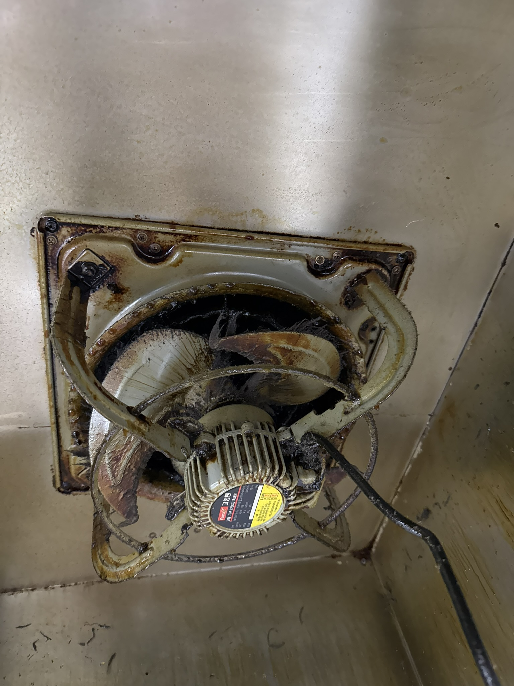
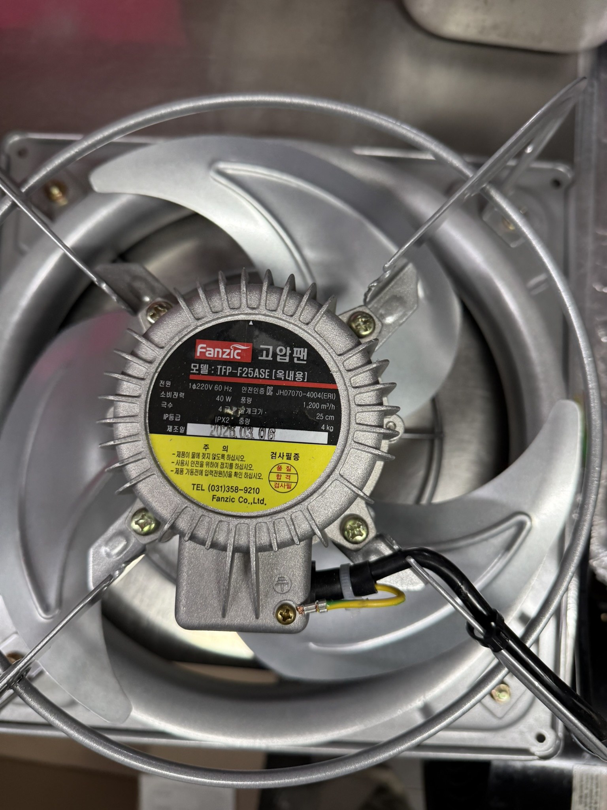
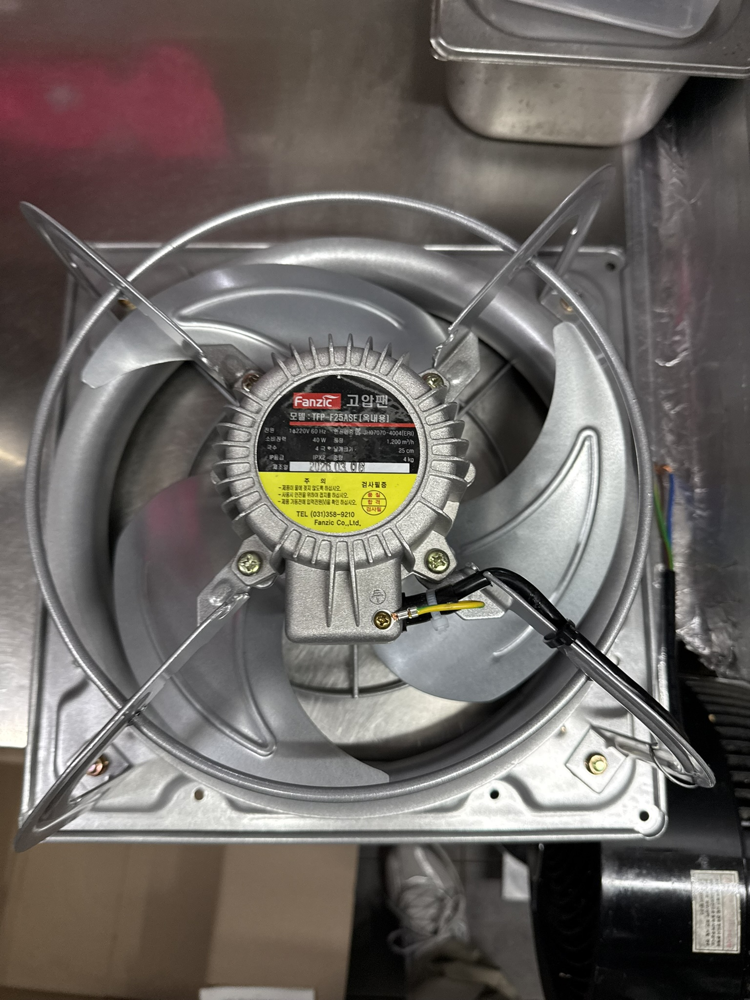
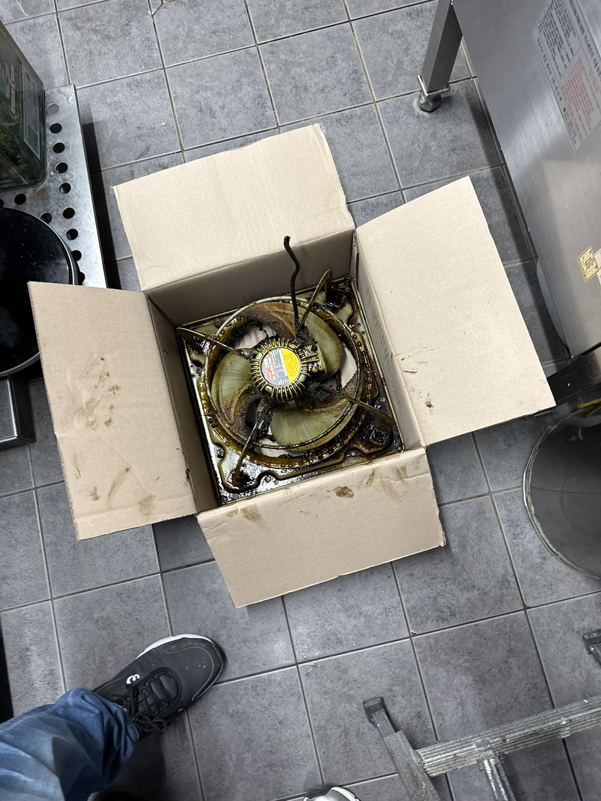
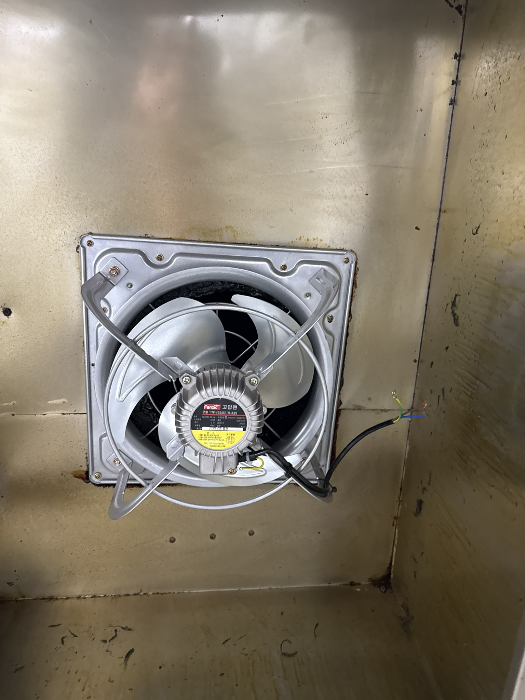
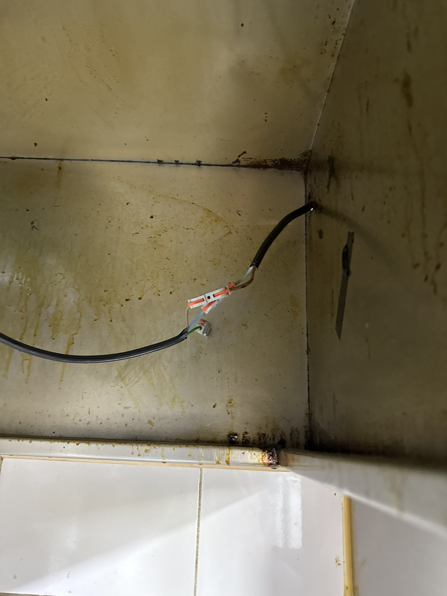
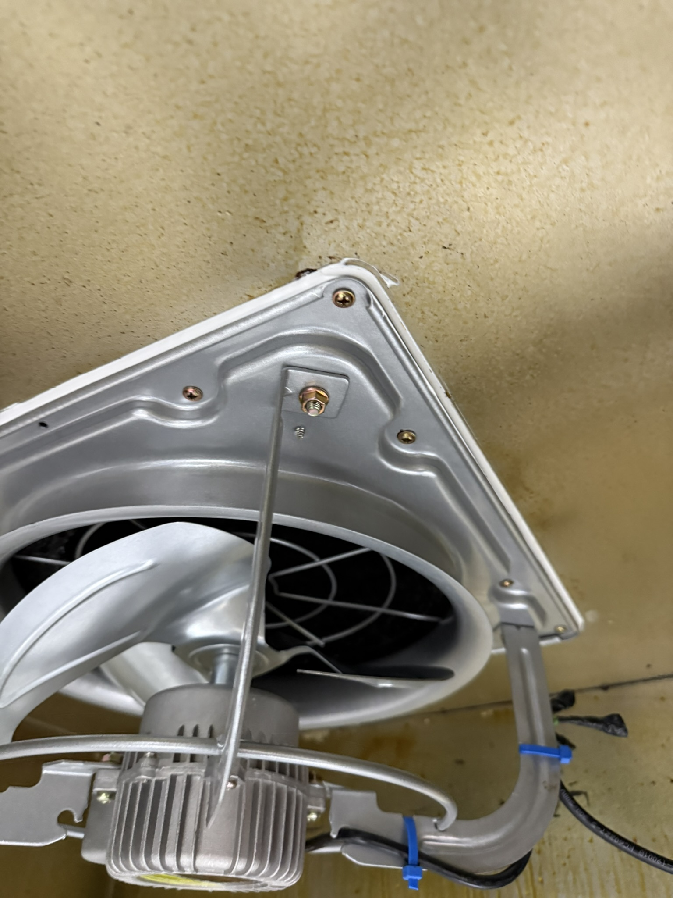
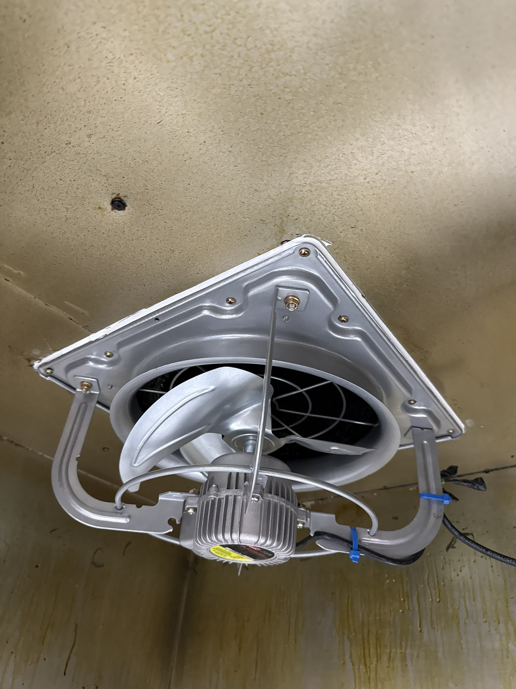
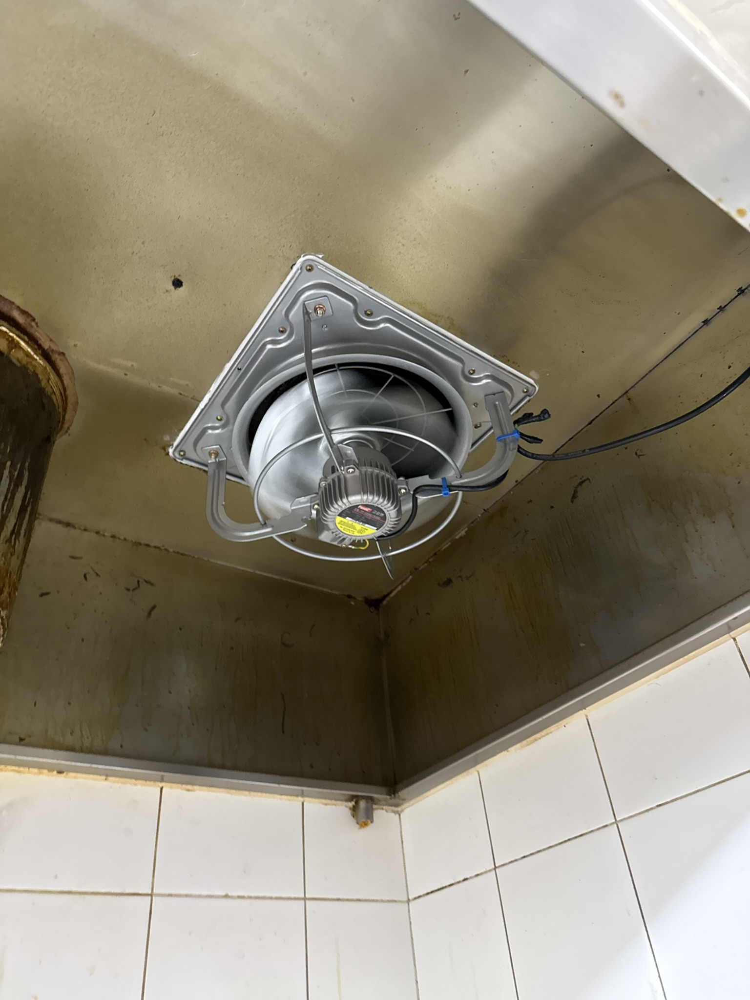

Before · After
시공 전후 비교
교체 전 보영만두 주방 환풍기 상태. 오랜 사용으로 인해 모터 성능이 저하되고 날개에 기름때가 쌓여 풍량이 크게 줄어든 상태. 주방에서 발생하는 열기, 연기, 냄새가 외부로 배출되지 않아 조리 환경이 악화됨.
공업용 환풍기 교체 완료. 강력한 풍량으로 주방의 열기·연기·냄새를 빠르게 외부로 배출. 조리 환경이 크게 개선되었으며 기기 소음도 이전보다 줄어들었음.
경기도 용인시 수지구 보영만두 주방의 노후된 환풍기를 공업용 환풍기로 교체한 작업. 오랜 사용으로 풍량이 크게 저하된 기존 환풍기를 철거하고 고효율 공업용 환풍기로 교체하여 주방 열기·연기·냄새 배출 문제를 당일 해결했습니다.
교체 전 보영만두 주방 환풍기 상태. 오랜 사용으로 인해 모터 성능이 저하되고 날개에 기름때가 쌓여 풍량이 크게 줄어든 상태. 주방에서 발생하는 열기, 연기, 냄새가 외부로 배출되지 않아 조리 환경이 악화됨.
공업용 환풍기 교체 완료. 강력한 풍량으로 주방의 열기·연기·냄새를 빠르게 외부로 배출. 조리 환경이 크게 개선되었으며 기기 소음도 이전보다 줄어들었음.
기존 환풍기 현황 점검 — 모터 성능 저하 및 날개 오염 상태 확인. 교체 필요 사양 결정

기존 환풍기 전원 차단 및 배선 분리 — 안전한 탈거를 위한 사전 작업

기존 노후 환풍기 본체 탈거 작업

탈거 후 개구부 상태 확인 및 설치 면 정리 — 신규 환풍기 장착 전 이물질 제거

신규 공업용 환풍기 현장 반입 및 규격 확인 — 기존 개구부에 정확히 맞는 사양 검증

설치 프레임 및 고정 부재 준비 — 현장 맞춤 가공으로 틈새 없이 고정

신규 공업용 환풍기 본체 장착 — 개구부에 수평·수직을 맞춰 견고하게 고정

전기 배선 재연결 — 규격에 맞는 배선 작업 및 안전 점검

환풍기 주변 기밀 실링 마감 — 주방 내부 연기·냄새가 누기 없이 외부로 배출되도록 처리

통전 후 작동 테스트 — 풍량·회전 방향·소음 최종 확인. 기존 대비 풍량 대폭 향상 확인

시공 완료 — 보영만두 주방에 공업용 환풍기가 깔끔하게 교체된 최종 모습. 강력한 풍량으로 조리 중 발생하는 열기·연기·냄새를 신속하게 외부로 배출.
환풍기 날개에 기름때가 쌓이거나 모터 성능이 저하되면 풍량이 급격히 줄어듭니다. 청소 후에도 개선이 없다면 교체가 필요합니다.
모터 베어링 마모나 날개 불균형으로 인해 진동·소음이 커진 경우 교체 시점입니다. 계속 사용 시 완전 고장으로 이어질 수 있습니다.
환풍기 성능 저하로 흡입력이 부족해지면 연기와 냄새가 역류해 홀로 퍼집니다. 식당 위생과 고객 만족도에 직결되는 문제입니다.
환기가 제대로 안 되면 주방 내부 온도가 40°C를 넘기도 합니다. 조리사 건강과 식품 위생을 위해 환풍기 성능 점검이 필요합니다.
일반 가정용 환풍기는 주거공간의 환기를 위해 설계되어 풍량이 제한적입니다. 반면 공업용 환풍기는 식당·공장·작업실처럼 열기와 연기가 많이 발생하는 환경에 맞게 설계되어 풍량이 3~5배 이상 강력합니다. 주방처럼 지속적으로 고온의 열기와 기름 연기가 발생하는 공간에서는 반드시 공업용 환풍기를 사용해야 환기 효율을 제대로 유지할 수 있습니다.
사진과 주소를 보내주시면 빠르게 안내해 드립니다.
당일 출장 가능 여부도 확인해 드립니다.